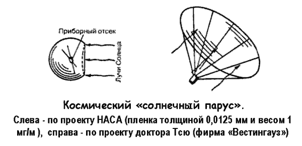

Солнечные паруса и парусолеты
Тип движителей, использующий внешний ресурс солнечного излучения, принято выделять в особую группу. Это солнечные паруса и так называемые солнечные энергодвигательные установки.
Принцип работы солнечного паруса основан на действии давления падающих на поверхность солнечных лучей. Это свойство стало известно благодаря двум замечательным ученым: английский физик Джеймс Клерк Максвелл в 1873 году предсказал его теоретически, русский физик Петр Николаевич Лебедев в 1899 году доказал его существование путем эксперимента.
Конечно же, сила давления лучей Солнца, действующих на распущенный в космосе зеркальный «парус», мала даже при значительной поверхности «паруса», но мы уже знаем, что в космосе даже малая сила в состоянии в течение большого времени разогнать массивный корабль до большой скорости. Неудобством является и то, что солнечный «ветер» дует всегда в одну сторону, от Солнца, и что его сила быстро ослабевает с расстоянием, но и это не может служить непреодолимым препятствием, по крайней мере для некоторых полетов в Солнечной системе.
Первое такое исследование вопроса использования давления солнечных лучей было произведено Константином Циолковским.
Более детальные расчеты осуществил главный радетель идеи использования внешних ресурсов Фридрих Цандер, который специально интересовался возможностью создания легких «зеркальных парусов». Он указывал, в частности, что если использовать в качестве «солнечного паруса» тончайшие листки металла, например алюминия на каркасе из проволоки, то его вес может составлять примерно 3 г/м? — ничтожная величина! Однако сила солнечного давления, приходящаяся на идеальное зеркало такой же площади, будет несоизмеримо меньше — всего 1 миллиграмм (в действительности же еще меньше). По Цандеру, можно снабдить космический летательный аппарат весом 500 килограммов подобным парусом огромной поверхности в 100 000 м? и весом 300 килограммов; таким образом будет создана ускоряющая сила менее 10 граммов. Эта сила уже одного порядка с тягой некоторых типов электроракетных двигателей. Она вызовет ускорение аппарата, равное примерно 0,2 мм/с?. Подобные ускорения уже могут обеспечить ряд межпланетных полетов.
Интересны, в частности, результаты теоретических расчетов, выполненных сотрудниками Вычислительного центра Академии Наук СССР и доложенные ими на Всесоюзном съезде по теоретической и прикладной механике в 1964 году.
По этим расчетам солнечно-парусные космические корабли, двигаясь по разработанным авторами оптимальным траекториям, могли бы достичь Марса за 122 суток, Венеры — за 164 суток, Меркурия — за 200 суток. Полет к Юпитеру должен длиться 6,6 года, к Урану — 49 лет. Близкие данные получены позднее и американскими учеными; в частности, полет к Марсу космического зонда весом 91 килограмм с помощью паруса площадью 46 м? должен потребовать, по этим данным, 135 суток.
Эффективные «солнечные паруса» могут быть созданы с помощью разработанных химией пластмасс, тончайших и прочных полимерных пленок, если на эти пленки нанести распыливанием совершенно ничтожный слой металла для обеспечения достаточно высокой отражающей способности.
Пленка гораздо удобнее металла в отношении ее хранения в свернутом виде (ведь огромный парус должен быть упакованным в небольшой контейнер ракеты, выводящей «солнечный» корабль в космос при взлете с Земли) и управления парусом.
Один из проработанных проектов солнечного паруса был предложен в середине 60-х годов доктором Гарвином. По Гарвину, вес зеркала принимается равным весу остальных элементов летательного аппарата (иногда в несколько раз меньшим), так что общая масса его, приходящаяся на 1 м? поверхности паруса, равна 5 граммам. Парус Гарвина имеет вид гигантского парашюта диаметром примерно 21 метр, прикрепленного к летательному аппарату стропами длиной примерно 60 метров. Интересно, что солнечный «ветер» так слаб, что парашют наполняется только за 80 секунд!..
По другому проекту, разработанному в Лос-Аламосской научной лаборатории под руководством доктора Коттера, парус из пленки представляет собой плоский диск, натянутый на обруч диаметром примерно 50 метров. Запуск на орбиту спутника летательного аппарата с этим парусом (его общая масса-2 2 килограмма, из которых половина приходится на долю паруса) может быть осуществлен сравнительно маломощной ракетой. После выхода на орбиту под действием солнечного давления аппарат может постепенно отдаляться от Земли.
Наконец, в проекте доктора Пауэла также применяется парашютообразный парус из пленки диаметром 480 метров при полезной нагрузке летательного аппарата 450 килограммов.
Сила солнечного давления на такой парус площадью 180 000 м? должна составлять примерно 180 граммов.

«Солнечные паруса» предполагается использовать для разных целей: стабилизации спутников на орбите (компенсации различных возмущающих воздействий), перевода на орбиту с большей высотой, а также межпланетных полетов (к Марсу и Венере).
Эффективность «солнечного паруса» можно было бы существенно повысить при увеличении количества падающей на него солнечной энергии. Ведь сила солнечного давления пропорциональна этой энергии (она равна удвоенной величине энергии, деленной на скорость света). Сразу же напрашивается идея усиления этого давления за счет искусственного источника солнечного «ветра», по мере необходимости подгоняющего парусный космолет. Можно представить себе расположенные в космосе станции, направляющие подобные «толкающие» потоки частиц вещества или квантов энергии на летящий корабль, с тем чтобы полнее «надуть его паруса». Вспомним, что о подобном писал еще Герман Оберт.
Особенно перспективными в этом отношении кажутся проведенные работы по лазерам — квантово-механическим генераторам когерентного света. Различные уже созданные лазеры — кристаллические (из них особенно широко известен лазер с кристаллом рубина), газовые и жидкостные — способны излучать тончайший ярко светящийся луч монохроматического света, то есть света одной, строго определенной частоты. Такой луч несет в себе жар миллионноградусной температуры, развивает огромное давление на встречную поверхность, распространяется на огромные расстояния, почти не расходясь, как это случается с лучом обычного прожектора. Правда, луч, излучаемый существующими лазерами, очень тонок и маломощен, но нет сомнений в возможности создания и гораздо более мощных квантовомеханических генераторов света. Вот тогда-то появится и возможность использования лазеров и для корректировки с Земли орбит спутников, и для расположения в космосе лазерных источников «космического ветра», способного надуть паруса межпланетных кораблей «дальнего следования».